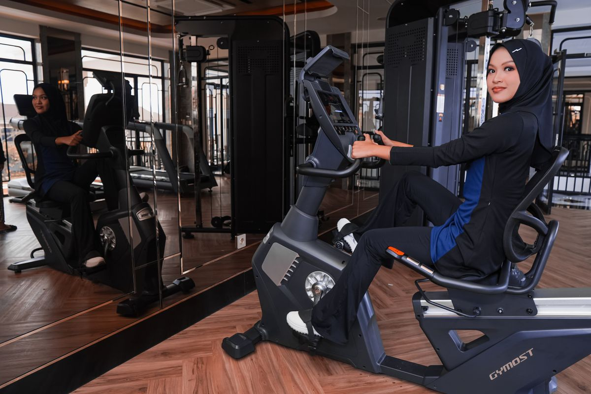
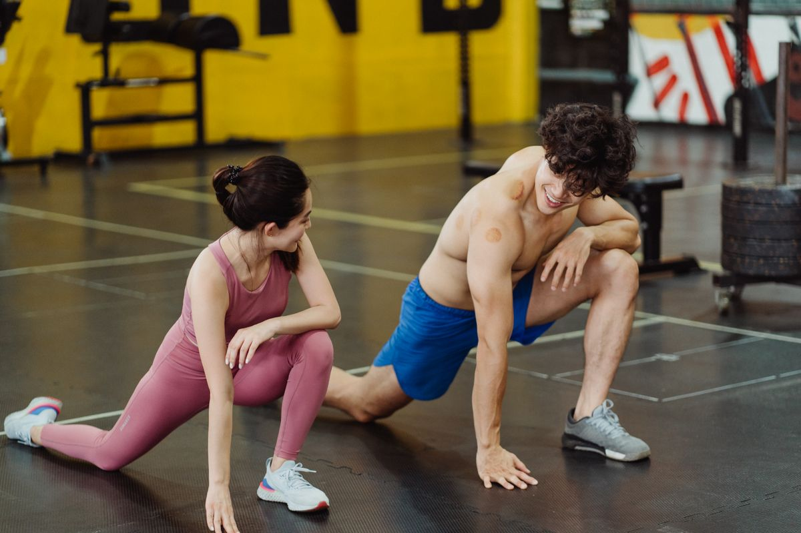

Тренировки
Три направления групповых занятий. В зале также можно тренироваться самостоятельно.

Силовая база
Знакомство с основными упражнениями со свободными весами. Тренер показывает технику приседаний, жима и тяги и помогает подобрать нагрузку.
Найти занятие в расписании
Сайкл
Интервалы на велотренажёре с изменением темпа и сопротивления. Нагрузку можно регулировать в процессе занятия.
Найти занятие в расписании
Мобильность
Спокойная тренировка с упражнениями для плеч, спины и тазобедренных суставов. Подходит для первого занятия в клубе.
Найти занятие в расписании